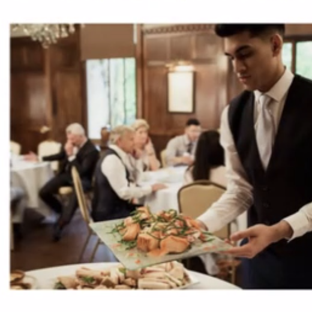
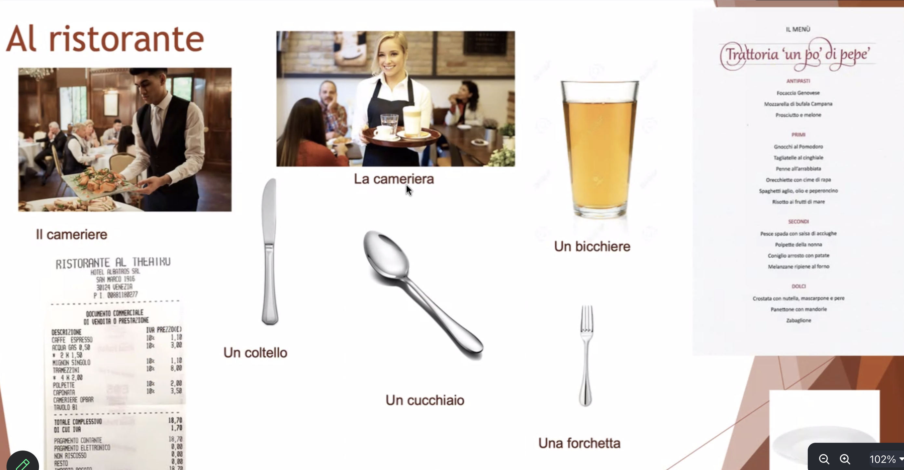
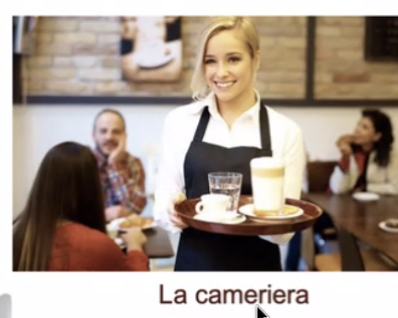
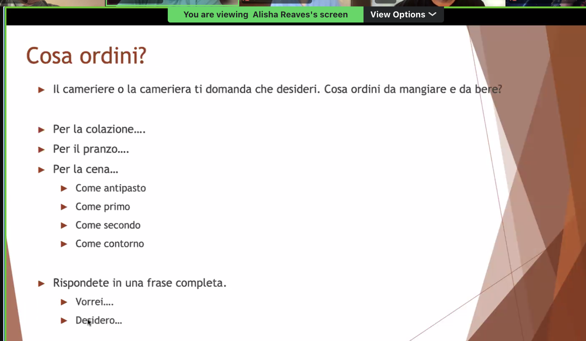
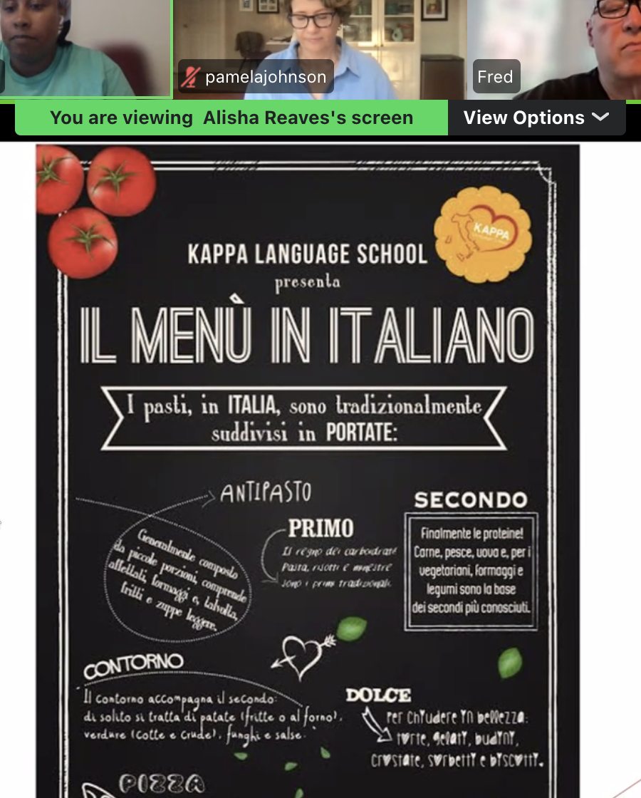
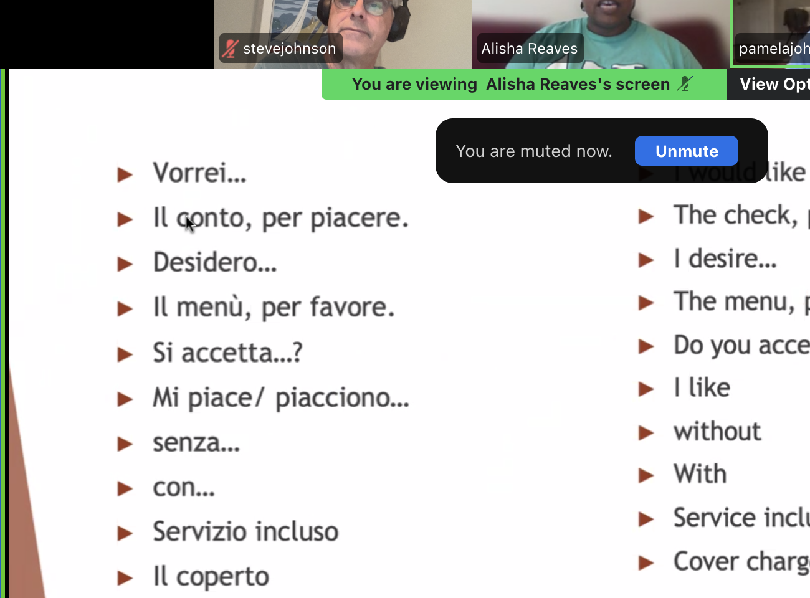
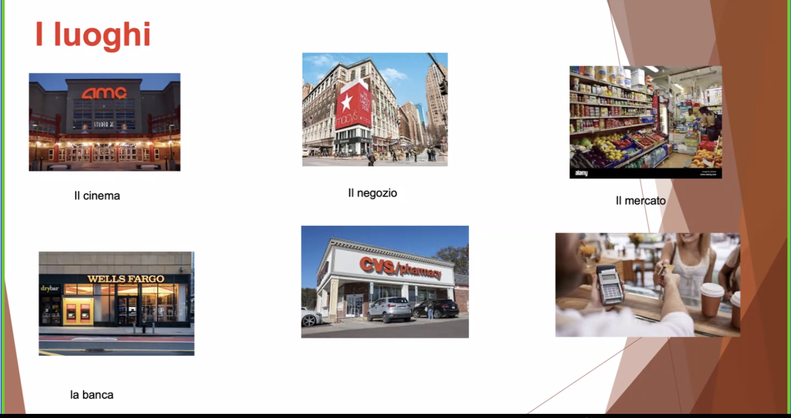
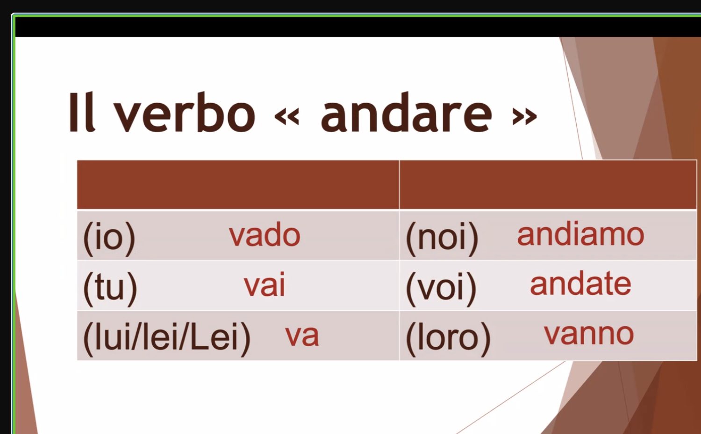
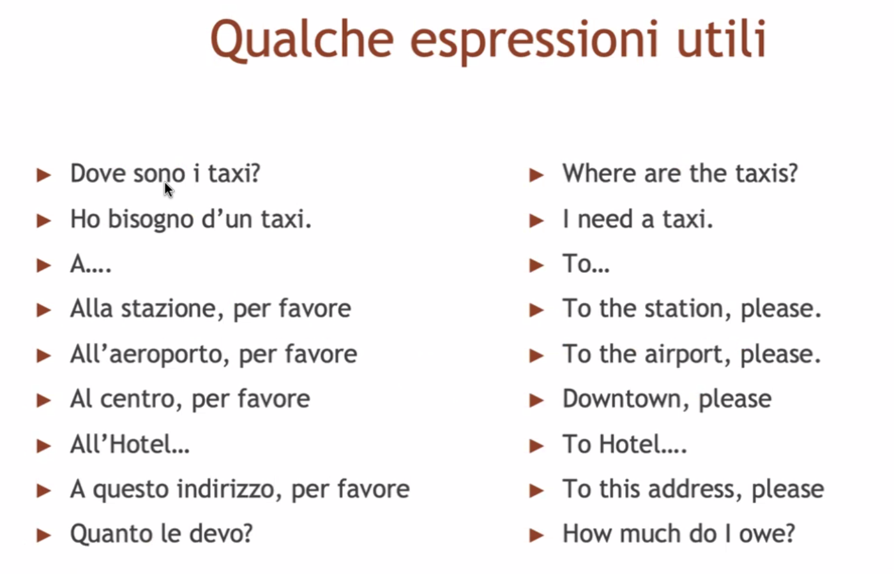

il cameriere
the waiter
Class lesson · July 22, 2026
Speak through a real situation first. Use the conjugation tables afterward to clarify the patterns you have already used.
Vieni al ristorante? — Are you coming to the restaurant?
Sì, vengo. Dove andiamo? — Yes, I’m coming. Where are we going?
Andiamo al ristorante in centro. — We’re going to the restaurant downtown.


the waiter

the waitress
un bicchiere · un coltello · un cucchiaio · una forchetta

Cosa ordini da mangiare e da bere?
Vorrei un primo e un bicchiere d’acqua.
Desidero il menù, per favore.

l’antipasto · il primo · il secondo · il contorno · il dolce

Il conto, per piacere.

il cinema · il negozio · il mercato · la banca
Dove vai? — Where are you going?
Vado al mercato. — I’m going to the market.

| Person | Form |
|---|---|
| io | vado |
| tu | vai |
| lui / lei / Lei | va |
| noi | andiamo |
| voi | andate |
| loro | vanno |
The supplied screenshots name “andare e venire,” and the learner directly recalls both verbs. No complete venire table is visible, so this standard Italian table is explicitly reconstructed rather than presented as slide transcription.
Vieni con noi? — Are you coming with us?
Sì, vengo. — Yes, I’m coming.
| Person | Form |
|---|---|
| io | vengo |
| tu | vieni |
| lui / lei / Lei | viene |
| noi | veniamo |
| voi | venite |
| loro | vengono |

Ho bisogno di un taxi.
Alla stazione, per favore.
Quanto le devo?
Non capisco.
Puoi ripetere?
Più lentamente, per favore.
Come si dice in italiano?
This page is a reviewed learning reconstruction from class screenshots. Exact crops preserve the class evidence; reconstructed language is labeled.